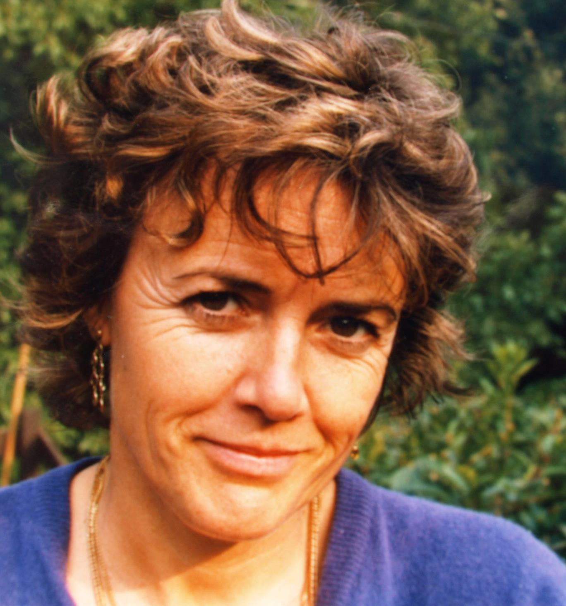

Emlékképek az Erdei malomból
I. Gyerekkori emlékeim
A kertemben néha megpihenek a nagy fenyőfa alatt, ahonnan Kelet felé a legszebb a kilátás : előttem Villandry középkori tornya, világhírű reneszánsz kastélya és kertje, a háttérben lankás erdős domboldal és messze-messze mögötte, másfélezer kilométerre, szintén lankás dombok között rejtőzik egy régi vizimalom, gyermekkorom színhelye.
- Gyerekek megyünk a malomba! Hányszor hallottuk gyerekkorunkban szüleinktől ezt a rövid, ellentmondást nem tűrő felszólítást, ami azt jelentette, hogy abba kell hagyni a játékot, ismét készülni kell a számunkra oly hosszúnak tűnő útra amely a városi lakásunktól több kilométerre fekvő Erdei malomba vezet. Nem mindha nem szerettünk volna az öcsémmel ide kijárni, csak a számtalanszor megtett út, a félbemaradt játék aggasztott minket. Mivel akkoriban ritkán járt autóbusz Sopronból Bánfalvára és messze volt a megállója, inkább gyalog vagy biciklivel vittek minket a szülők. Attól sose riadtunk vissza ha gyalog kellett menni mert Apu mindig mesélt nekünk útközben, nem a könyvekből ismert meséket, hanem olyanokat, amelyeket ő talált ki. Sokszor sajnáltuk ha megérkeztünk és még nem volt vége a mesének, de tudtuk, hogy a folytatás majd akkor következik ha ismét útra kelünk. Ilyenkor mi emlékeztettük a mesemondót, hol is tartott a valóság és a képzelet világából szőtt történetben és szaporán szedtük mellette kis lábainkat nehogy elmulasszuk egy szavát.
Az Erdei malom egy külön világ volt számunkra, egy csöndes zöld sziget a falu végén, ahol a patakok csobogását, a madarak csicsergését csak a völgyben óránként járó busz hangja törte meg, jelezve az ötvenes években harangszó hiányában az idő múlását. Amikor a közelébe értünk, már messziről éreztük és szívhattuk az erdei malom oly jellegzetes friss illatát, a patak fölé boruló hársak, szelídgesztenyék, nyárak, fenyők virágos rétek balzsamának finom mixtúráját. Mint kis gyereknek óriásoknak tűntek a kert évszázados fái, melyek nagyobbak voltak mint a környező erdők fái, nem véletlenül kaphatta a fák alatt rejlő épületegyüttes az erdei malom nevet. Csak két házszám létezett ekkor a két patakág között haladó földút mentén: az Erdei malomköz 1. szám a malompatak mentén húzódó épület boltíves kapuján és a 3. szám a nagymama házán. Az út mellett volt még egy üresen álló kocsiszín amely hat vaskos tartóoszlopáról a „hatlábú” nevet viselte és egy öreg pajtaépület, aztán mindenütt amerre csak a szem ellát a titokzatos, sok csodálatos dolgot rejtegető természet. Szabadok voltunk itt mint a madarak a kerítés nélküli kertek, rétek erdőszélek változatos világában. A felnőttek csak egy dologtól óvtak minket, hogy nem szabad egyedül az erdőbe menni mert körös-körül ott a határ a robbanó aknákkal, a puskájukkal minden mozgó lényre lövő határőrökkel. Nemigen kellett fegyelmezni e-miatt minket, hiszen többször hallottunk a felnőttektől félelmetes történeteket a határsértőkről, amelyek ijesztőbbek voltak számunkra mint az erdőben rejtőző farkasról szóló mesék.
A malom ekkor már nem működött, állt a nagy fakerék, a malompatakot se kotorták, így alig csorgadozott már benne víz. A malom őrlőházában denevérek tanyáztak, a hatalmas 2 faszerkezetek, malomkövek is ijesztően hatottak ránk, nemigen mertünk ide egyedül betenni a lábunkat. A mellette levő emeletes épületekben többen laktak, egy öreg beteg nagynéni és idegen családok, akik közül csak a földszinti boltíves bejárat mellett lakó idős néni Ausztriából nyaranta visszatérő lányával és unokáival volt kapcsolatunk, annál is inkább, hogy ez egy alkalom volt Bécsben született nagymamánk számára a beszélgetésre, a mi fülünknek se volt idegen a német szó. Egy belső udvarra nyíltak a földszinti és emeleti lakások az udvart hátul egy hajdani kőfejtő meredek fala zárta, innen fejthették annak idején az épületekhez a követ. Az út másik oldalán egy boltíves téglahíd vezetett a Rákpatakon keresztül a nagymama házához. A hídon mindig megálltunk, hogy valamit bedobjunk a patakba és nézzük mikor tűnik el a híd alatt és bukik fel a túloldalon a „hajónk”. A szintén a patak fölé, téglaboltívre épített háznak a kert felé nyílt a bejárata, előtte a félkör alakú kaviccsal felszórt kis tér közepén, a Hikori-diófa alatt egy malomkő asztal állott, amelyet gyakran körülültek a családtagok, a látogatók.
Ebbe az ősei által épített házba vonult vissza a háború alatt a nagymamánk és szüleimmel itt növekedtem én is az öcsém születéséig. Életem első éveiről a felnőttek és idősebb unokatestvéreim elbeszéléseiből maradt fenn néhány epizód. Születésem körülményei elég kalandosak voltak. Amikor az 1947 junius 15-re virradó reggel leadtam az első jeleket, hogy a világra óhajtok jönni, mivel telefon nem volt a faluban, apám biciklire ugrott, hogy mentőautóért menjen a 6-7 kilométerre levő városi kórházba. Útközben elszakadt a bicikli lánca és gyalog bizony hosszan tartott az út. Anyám kínok között, a híd széles téglakorlátján ülve várakozott a szép reggeli napsütésben, miközben kis öt éves unokahuga huncut mosollyal kérte tőle: „Erzsi néni de nagy a hasad, dobolhatok rajta?” Mire aztán végre megjött a mentő nem kellett sokáig rám várni, a kórház várótermében nagy pánik közepette jöttem a világra. Az újszülött csecsemővel nem lehetett egyszerű az ósdi házban, ahol kútra kellett menni a vizért, villany se volt, este gyertyával, petróleumlámpával világítottak. De ez a félreeső, eldugott hely nagy becsben állott, mivel menedéket adott a háború nehéz éveiben a családnak, számos barátnak, akik a bombázások elől ide menekültek. A háború után szinte csoda volt, hogy nem államosították a régi családi birtokot, amely megmaradhatott a család számos idős tagjának osztott tulajdonában. A negyvenes években itt könnyebbnek bizonyult a túlélés, volt gyümölcs, gesztenye, tüzelőfa, fel lehetett törni helyenként a rétet a zöldségtermesztéshez, az állatokat kedvelő fiatal anyám tyukot, kacsát, nyulat tartott és bizony keserű könnyekkel megsiratta amikor le kellett vágni egyet közülük. A kis sárga pipik be-be jártak mellém a ház elé kitett járókába és én igyekeztem elkapni a kis játszótársakat.
Az első önálló lépéseim is kint a kertben történtek, szüleim uborkát szedtek befőzéshez én pedig a mellém lerakott uborkákkal játszadoztam. Egyszerre csak arra lettek figyelmesek, hogy eltűntem mellőlük és jobb kezemben egy kis uborkát a magasba tartva megyek a kerti úton. Persze amikor észrevettem, hogy szaladnak utánam és nem fogom az ujjukat rögtön lecsücsültem, de ettől kezdve már önállóan is tudtam járni. Ezidőtájt még voltak lovak, tehenek a faluban, így évente kétszer kaszálták a réteket. A ház előtti nagy tisztáson a nyár elején magasra nőtt a fű, így nem volt nehéz elrejteni egy apró gyereket. Hányszor kereshettek engem a szüleim vagy a nagymama a nagy fűben a tarka alpesi virágok között! Állítólag mint Piroskának, piros kendővel kötötték be a fejemet, hogy könnyebben követhessék a kis csavargó útvonalait a nagy kertben.
Öcsém születése után a Deák tér végén -amit Sztálin térnek hívtak akkor- az óvónőképzőben kaptunk egy szolgálati lakást, anyánk az intézet gyakorló óvodájában dolgozott, apánk pedig a tér másik oldalán, a tanítóképzőben tanított. Úgylátszik a nagymama akinek csak fiai voltak nagyon megszerette a gyakran rábízott pici lányt és hiányozhattam neki miután elköltöztünk 3 Bánfalváról. Így a nyári vakáció elején mindig kivittek a nagymamához és éveken keresztül az egész nyarat vele töltöttem a malomban. Bár nem volt itt olyan sok gyerek mint az óvodában, nem emlékszem, hogy unatkoztam volna, akkor se ha egyedül játszottam, hiszen annyi látni és tennivaló volt körülöttem. Van-e jobb játszótér mint a természet adta számtalan lehetőség? Volt itt egy csomó mászásra alkalmas fa, amelyek közül egy terebélyes mogyoróbokrot és egy lucfenyőt kedveltem leginkább, ez utóbbira az alatta levő vadcseresznye fáról lehetett felmászni az egymás fölött sorakozó ágakon fel-fel a magasba, ahonnan ha lenéz már szédül az ember, de a kilátás megéri a félelmet. Volt a patak amelyben a nagyok még pisztrángot, rákot is fogtak a kövek között. Amikor meleg volt órákig lehetett lábalni benne, kavicsot gyűjteni, gátat építeni. Volt amikor a patak által görgetett símára csiszolt cserép és tégladarabokat gyűjtögettem, e különböző színű „krétákkal” aztán nagyobb kő vagy cseréplapokra lehetett rajzolni vagy csiszolással különféle alakokat formázni. A nagy fák alatt egy régi szaletli állt ahol nagyon szerettem játszani, itt tároltam a nyaranta gyűjtött kincseimet.
Ha társra vágytam a kert végén az út túloldalán volt egy velem egykorú kis barátnőm. Kedves, igazi bánfalvi sváb család sarja volt azon ritka családok közül amelyeket nem telepítettek ki a háború után. Szülei főleg németül beszéltek, magyarul furcsa kiejtésük volt, még a szőke, kékszemű kislányuknak is volt némi akcentusa, de számomra ez nem volt zavaró, hiszen nagymamától én is gyakran hallottam német szót. Nagyon szívesen láttak mindig engem és minden aggodalom nélkül engedték át hozzánk a kislányukat, akivel órák hosszat tudtunk játszani. E barátságnak a szülők is hasznát látták, mert a nagymamám megengedte nekik, hogy a kertünkön keresztül járjanak a malom fölötti szőlőjükbe, így nem kellett nekik körbe kerülni a mi nagy kertünket.
Az Erdei malom kertje inkább park volt, a híd után egy kerti ösvény vezetett a tisztás közepén magasodó „kiserdőnek” nevezett nagy facsoport felé, az út mentén és az évszázados erdei és lucfenyők, tölgyfák, szelídgesztenyék alatt mindenféle ritka exóta növények díszlettek, amelyeket neves botanikus keresztapám ültetett. Az úttól jobbra a fák alatti tér közepén egy régi kőváza állt, nagymama mesélte, hogy zeneszerző nagypapánk a harmincas években nyári kamarakoncerteket szervezett itt. Kicsit odébb a fenyőfák alatt állt egy régi kálvária stáció talapzatán embernagyságú figurákkal. Nagymama fiatalkorában volt a kertben tenisz és tekepálya is, melyek helyét már benőtte a fű. A patak folyását nagy fák kísérték és alkották a kert természetes határát.
Ha szép idő volt egész nap kint játszottam, Nagymama csak ebédre és vacsorára hívott a házba, ilyenkor a századfordulós bútorokkal berendezett ebédlőben terített asztal várt. Ha visszagondolok rá, még a legnehezebb időszakban is, amikor a minden konfortot nélkülöző konyhában két tojás helyett fél tojásból készítette a tésztát, amikor csak nagyon ritkán, többnyire vasárnap ettünk húst, mindig nagy gondot fordított arra, hogy szépen, ízlésesen tálaljon. Nem voltam jóevő gyerek, ezért, hogy nagyobb kedvet csináljon az evéshez elővette a Wagner operákat ábrázoló tányérokat, a kecskelábú kis ezüst kanalakat, az irizáló Ostendi kagylókba fűzött szalvétákat. Elődeink békebeli világának, a háborúk zűrzavarából átmentett tárgyai voltak ezek, amelyeket mi gyerekek is becsben tartottunk. Ha egyedül voltam bent a házban néha kinyitottam nagymama levendula illatos ruhásszekrényét, amelyben a régi korok divatja szerint készített ruháit őrizte. Annál szebbnek tűntek e ruhák nekem, hogy akkor nem igen lehetett látni ilyen szép finom szövetekből, selyemből, bársonyból varrt, csipkékkel, gyöngyökkel díszített holmikat. Nagymama öreg korában is gondot fordított küllemére, még akkor is ha csak a faluba ment vásárolni, ilyenkor otthonkáját utcai viseletre cserélte.
A hálószobában állt egy szárnyas tükör, titokban néha felpróbáltam a régi ruhákat és szerepeket játszottam, illegettem magamat a tükör előtt. Az ablak mellett volt az ágyam, egy régi vaságy fej- és lábtámláján festett angyalkákkal, rézdíszítéssekkel, elől felhúzható hálóval, hogy ne essen ki a gyerek az ágyból. A sok szabadban való mozgás után nagyokat aludtam ebben az ágyban, reggel a madarak és a nagy hársfa levelein keresztül a szobába belopakodó napsugarak ébresztettek. Öcsém nemigen aludt kint a nagymamánál, a szülők hozták ki magukkal amikor jöttek dolgozni a kertbe. Többször is mesélték a talán figyelmeztetésnek is szánt történetet eleven, mozgékony kistestvéremről akit hogy ne kapja el tőlem a skarlátot, karanténbe helyeztek a nagymamához. A malompataknál játszott amikor a bejárat mellett lakó idős néni egy nagy csobbanásra lett figyelmes és látta, hogy a kisgyererek eltűnik a patakban, ahol több volt az iszap mint a víz. Az volt a szerencse, hogy rögtön odaszaladt, mert a gyerek a patakon keresztül lábaló pallóhíd alá került és már fulladozott az iszapos vízben, mivel nem tudott felállni az alacsony kis híd alatt. Elképzelhető a nagy ijedelem, amikor sikerült kimenteni onnan a gyereket. A végülis szerencsés kimenetelű „kaland” után nem csoda, hogy nagymama nem merte többet egyedül vállalni eleven, kalandos természetű fiúunokáját.
A nyár derekán aztán mozgalmasabb lett az élet a malomban, megérkeztek a pesti unokatestvérek a szüleikkel, másik nagymamájukkal akik elfoglalták a házban számukra fenntartott két szobát és a kert felöli konyhát. Ilyenkor mi nagymamával átköltöztünk a malom felé nyíló konyhába. Jöttek a nyári vakációra az osztrák lányok, néha Nagymama testvéreinek unokái, a bánfalvi lelkészcsalád öt gyerekével sokszor jelentőssé duzzadt a különböző nemű és korú gyerekekből összeverődött társaság. Megkezdődtek a közös kirándulások, a határsáv miatt a felnőttekkel együtt jártuk a környező erdőket és amikor találtunk gyűjtöttünk valamit: szamócát, málnát, áfonyát, szedret, gombát. Kezdetben mi kisebb gyerekek felszedtünk minden gombát és szaladtunk velük a mindentudó nagybácsihoz aki mindegyiket ismerte, hiszen több könyvet írt a gombákról, köztük egy gombahatározót. Gyorsan megtanultuk, melyek mérgezők és melyek ehetők. Este aztán jóízűen fogyasztottuk a kosarak tartalmát, a finom gombapörköltet, az erdei gyümölcsöket. A természet- tudományokban jártas nagybácsival és apánkkal a növények nevét is megtanultuk, sőt azt is hol milyen növény található, melyek a természetes és az ültetett növények. A bogarakat, erdei állatokat is elég jól ismertük, hiszen a kirándulások során vagy a kertben itt-ott felbukkantak, láttuk ahogy jönnek a szarvasok és őzek inni a patakba. De nemcsak a vadak jártak ide, a városból kijárt a Pajti kutyánk is mert megszokta amikor állandóan kint laktunk, hogy a patakhoz járt inni. Naponta megtette az oda-vissza tíz kilométeres utat, hiába folyt pár száz méterre a városi lakásunktól ugyanaz a patak. A kutya, cica mellett volt megszelíditett vadnyulunk, mókusunk, őzikénk, a keresztapáméknak pedig egy vicces beszélő papagájuk aki időnként többek között azt szajkózta „kopasz a Rákosi”.
Voltak napok, amikor egy egész gyereksereg gyűlt össze a malomban, a nagyobbaknak mindig voltak jó ötleteik és hacsak lehetett mi kissebbek is lelkesen velük tartottunk. A forró nyári napokon gátat építettünk a csendesebb folyású malompatakban, amikor már elég magas volt a víz fateknőt engedtünk rá és csónakáztunk vele. Gyakran vívtunk fenyőtoboz és szénakazal csatákat, bujócskáztunk, labdáztunk, szaladgáltunk sokszor egész nap. Esténként többször sütöttünk szalonnát a malom feletti „Rigli”-nek nevezett nagy rét közepén, a tábortűzhöz mi gyerekek gyűjtöttük az erdőből a fát. Évente egyszer nagy főzést is rendeztünk és hozzá agyagból tapasztott kemencét építettünk a kertben. Bár ételeink gyakran megégtek, füstízűek voltak, hősiesen megettük amit sütöttünk főztünk a fák alatt felállított gyerekasztalnál.
Az erdei kirándulásokon kívül ritkán mozdultunk ki az erdei malomból. Szüleink néha elvittek minket a szomszédos Brennbergbe, ahova csak külön engedéllyel a határsávban lakóknak lehetett belépni. Ilyenkor a puskás határőrök többször is igazoltattak minket, mi gyerekek nem szerettünk ide kijárni mert féltünk a barátságtalan katonáktól, nem mozoghattunk szabadon ebben a világtól teljesen elzárt hajdani bányászfaluban. A tőlünk alig félórányira levő Erdei iskolába gyakrabban jártunk, azért is mert a kertjében levő régi ovális medencében tanítottak meg úszni. Nem nagyon szerettem ide se jönni mert a sötét tiszafákkal körülvett medencének haragos zöld, hideg vize volt és ráadásul félhettem attól is, hogy az úszómester nagy farúdjára függesztve kell tempózni és kapkodni a levegőt, nehogy elsüllyedjek. De nagy megkönnyebbülés volt, amikor rúd nélkül szabadon tempózhattam és a nem túl mély medencében amikor nem figyeltek letehettem lábamat! Az úszást csak sokkal később tudtam élvezni, amikor nyaralni mentünk a Balatonhoz.
Az iskolakezdés után csak hétvégeken jártunk ki a kertbe, mivel ilyenkor már nem voltak játszótársak, öcsémmel néha segítettünk a szülőknek almát, diót, gesztenyét szedni. A gesztenyésben szerettünk legjobban, mert itt apánk égette az összegereblyézett lombot és mi is dobálhattuk a szúrós gesztenyegubókat a tűzbe, amelyeket csak óvatosan vagy kesztyűvel lehetett megfogni. Milyen finomak voltak a sült gesztenyék, amelyeket a hamuból kapartunk ki! Amikor hűvösek lettek a napok és vége volt a kerti munkáknak nagymama beköltözött hozzánk a városba, volt amikor karácsony vagy újév után felment Pestre a két másik fiához és csak akkor költözött ismét vissza a bánfalvi házba amikor nyílni kezdtek a tavaszi virágok.
Nagymamának fontos szerepe volt vallási nevelésünkben. Mivel pedagógus szüleinknek az ifjúság kommunista szellemben való nevelése volt a feladata, nem járhattak templomba. Nyáron Bánfalván nagymamával jártunk vasárnaponként az evangélikus gyermek istentiszteletre az elemi iskola melletti imaházba, amelyet még a háború előtt az egyházi közösség építtetett. Iskolaidőben vasárnaponként is ide jártunk vele, télen pedig a soproni evangélikus templomba. A soproni gyermekistentiszteletek abban a belvárosi régi polgári házban voltak ahol a vallásüldözés alatt a Lutherista gyülekezet titokban tartott istentiszteleteket, a műemlék épület udvarán ma is látható a szószék ahonnan az igét hirdették. Karácsonykor amíg kicsik voltunk nagymama elvitt mindig minket a temetőbe, hogy ott a malom hajdani, immár a temetőben nyugvó lakóiról megemlékezzünk és gyertyát gyújtsunk nekik is e napon. Ilyenkor mesélt nekünk mindazokról akik nincsenek már velünk: nagypapáról, szüleiről, nagyszüleiről, a fiatalkoráról. Visszafele már türelmetlenek voltunk, sokszor fáztunk is, alig vártuk, hogy hazaérjünk, reméltük hogy közben már megjött a kis Jézus és hozott nekünk karácsonyfát, ajándékot. A meleg szobában nem kellett már sokáig várni, meghallottuk a jászolban fekvő kisjézus zenélő hangjait, kinyílt a nagyszoba ajtaja és ott állt a gyönyörű karácsonyfa. Aztán körbeálltuk és megcsodáltuk az égő gyertyákat, a rajta csüngő díszeket. A karácsonyfáról is a malom köszönt vissza: az ezüstre, aranyra festett fenyőtobozokkal és diókkal, igazi piros almákkal, a nagymama által formált mézes figurákkal.
Nem volt könnyű a megélhetés az ötvenes években, különösen a városi emberek számára. A tanári fizetés alig futotta a legszükségesebbre, nemcsak a szülők, mi gyerekek is vártuk a hó végét, „a szent fizu ünnepét” azaz a fizetés napját - ahogy azt a családunkban elneveztük- mivel a havi nagy bevásárlás ünnepi eseménynek számított, ilyenkor kaptunk némi inyencséget: egy kis tábla csokoládét, néhány cukorkát. Az egyik nyáron Apánk volt tanytványának szülei vendégségbe hívtak minket falura és látván mennyire tetszik nekünk a falusi élet, felajánlották a szüleinknek, hogy hagyjanak ott minket egy-két hétre. A falu egy kis kánaán volt akkor számunkra, ahol nemcsak rendkívül kedvesek voltak velünk a falusi emberek, de kényeztettek minden jóval ami csak szem - szájnak ingere. A falusi emberek a 6 földek államosítása után is megtermelték a ház mellett a konyhára valót. Vendéglátóink portáján is volt mindenféle állat: tehén, ló, sertés, házinyúl, baromfi, hátul pedig gondosan művelt zöldséges és gyümölcsöskert. Mivel jól éreztük magunkat falun és ráadásul kicsattanó egészségben, néhány kilóval gyarapodva láttak viszont a szüleink, többször is elküldtek minket „falusi táborozásra”. Amikor utazásra, nyaralásra a legtöbb családnak nem volt módja, ez egy jó alkalomnak bizonyult hogy a gyerekek más környezetben új élményeket, tapasztalatokat szerezzenek és jó formában kezdjék ősszel az iskolaévet.
Mindketten a szomszédos tanítóképző gyakorlóiskolájába jártunk, ahol Apánk a jövő tanítóit képezte a természettudományokra. Mi nemcsak a kötelező órákat töltöttük az iskola épületében, de számos délutánt is, amikor átmehettünk a szertárba és „segédkezhettünk” Apánknak a biológia vagy kémia órák kísérleteinek előkészítésében. A vitrinekben kisebb- nagyobb üvegekben formalinban tartósított állatokkal ismerkedhettünk, de voltak élő állatok is: egerek, siklók, békák, teknősök. A folyosókon akváriumok egész sorát lehetett megcsodálni változatos színű és formájú halakkal, vizinövényekkel. Segítettünk táplálni a halakat és kisállatokat, figyelemmel kísértük ahogyan szaporodnak, növekednek. Megtanított minket Apánk arra is hogyan lehet meghatározni, lepréselni a növényeket, lelkesen készítettük saját herbáriumunkat. A kémia szertárban is érdeklődéssel figyeltük ahogy másnapra előkészíti Apánk a kísérletekhez a lambikokat, fiolákat, „csodaszereket”, számtalan kérdésünkre mindig kaptunk tőle választ.
1956 őszén én a negyedik osztályba jártam, öcsém a másodikba amikor híre szállt, hogy Pesten kitört a forradalom. Szüleink gondterhelt arccal hallgatták a rádiót, nemcsak a magyar de a bécsi híreket, a recsegő szabadeurópát, mindebből mi nem sokat értettünk csak arcukon láttuk az aggodalmat. Az iskolában nem volt tanítás, otthon voltunk a szüleinkkel és hallottuk ahogy egymás között, az ismerősökkel arról tárgyalnak hova meneküljenek, ha megint kirobban a háború. Összekészítették a legszükségesebb holmikat, hogy ha kell menjünk a malomba, ahol nagyobb biztonságban lehetünk, mint a városban. A budapesti eseményekhez képest a határszéli provinciális kisvárosban nem sok minden történt: a Sztálin téren ledöntötték a diktátor szobrát, leszedték a kommunistákról elnevezett utcatáblákat, a vörös csillagokat, a nagyobb diákok itt-ott tüzet raktak és elégették orosz könyveiket, a népszerűtlenné lett kommunista vezetők tablóit. A szokásosnál is kihaltabb utcákon eddig ismeretlen osztrák rendszámú autókat lehetett látni, a megnyitott nyugati határon kíváncsiságból vagy szolidaritásból egyre többen jöttek a szomszédos Ausztriából, hogy segélycsomagokkal, meleg holmikkal, élelemmel segítsék a magyar lakosságot. Mi ekkor kaptunk először valódi csokoládét, narancsot, banánt, eddig nem látott ismeretlen finomságokat. Kilenc és hétéves gyerekfejünkkel nem értettük igazán mi történik körülöttünk, csak azt éreztük, hogy az eddigi nyugodt életünk válságba került, hogy a bizonytalanság, a félelem betette a lábát békés kis otthonunkba és nem lehet tudni mit hoz majd a holnap.
November negyedikén aztán jött a hír: bejöttek az oroszok! A magyarok pánikszerűen kezdték elhagyni az országot. Nálunk is egymásnak adták a kilincset a rokonok, barátok, hallottuk ahogy izgatottan közölték szüleinkkel, hogy mindenki menekül, hogy ők is mennek, hogy menjünk mi is velük. A tőlünk egy sarokra levő Mátyás király utcában még most is előttem van a kivándorlókkal teli utca látványa, ahogy a zord, szürke novemberi napon kisebb-nagyobb csoportokba verődve, bőröndökkel, csomagokkal, babakocsikkal, gyalogosan vagy kerékpáron, szabálytalan sorokban vonulnak felnőttek és gyerekek a pályaudvartól a városon keresztül a határ felé. Ott álltunk mi is a szülők kezét fogva, tanácstalanul, aztán visszafordultunk, hazamentünk kis otthonunkba és Apánk azt mondta nekünk, ő nem tud idegenbe menni, itthagyni mindent, ő itt marad a hazájában, a szülővárosában bármi lesz is. 7 Ekkor láttuk először sírni a szüleinket, együtt, velük összebújva, némán ültünk a nagyszobában és félve néztünk az ablakon keresztül mikor bukkannak fel az orosz tankok a tanítóképző sarkánál a győri út felől. Aztán a teret lezáró épület mögött észrevettük az első tankot, először csak a csövét láttuk ahogy óvatosan körbe pásztázza az előtte levő teret, aztán jött a többi és mint óriási szarvasbogarak csápjaikat mozgatva, lassan haladtak tovább a város felé. Az oroszok bejövetelét követő napokban, mivel nem történt semmi a város elnéptelenedett utcáin, lassan kimerészkedtek az emberek az utcára, valamelyest visszatért az élet a megszállt városba. Mivel a háborútól tartva az emberek felvásároltak mindent, szinte üresek voltak a boltok. De nemcsak a boltok, hanem számos családtag, barát lakása is. Amikor ismét megkezdődött a tanítás az osztályban sok pad üresen tátongott, felére csappant az osztály létszáma és a tanárok közül is sokan hiányoztak. Néhányan aztán visszajöttek a határon túli menedéktáborokból azok közül akiknek nem volt lehetőségük vagy elegendő bátorságuk, hogy folytassák nyugat felé útjukat. Lehangolt emlékek maradtak erről az időszakról, amiben lehet hogy a zord tél is közrejátszott, de az idő múltával ha vacilálva, nehézkesen is, de tovább folytatódott mindennapi életünk.
A tavasszal nagymama ismét kiköltözött a malomba, ha szép idő volt mi is kijártunk a kertbe, nyáron mint minden évben ismét összejöttek az erdei malom nyári lakói. Esténként a kőasztal körül nagy beszélgetések folytak az elmúlt eseményekről, az eltávozott vagy letartóztatott ismerősökről, a nehézségekről, a bizonytalan jövőről. Mi vidéki gyerekek érdeklődéssel hallgattuk pesti unokatestvéreink izgalmas beszámolóit a fővárosban átélt forradalmi eseményekről, az utcákon folyó tűzharcokról, hogyan dobálták a gyerekek az orosz tankokat. Aztán folytattuk megszokott és új játékainkat, a kirándulásokat, a közös élményekben gazdag nyári vakáció feledtette velünk a nemrég átélt nehéz őszi-téli időszak emlékeit.
A következő évben meghalt nagymama betegeskedő, utód nélküli testvére és végrendeletében Apánkra hagyta a tulajdonában levő ingatlanokat: a malomépületet a fölötte levő nagy gyümölcsöskerttel és szelídgesztenyéssel. Szüleim akkor még nem gondolták mennyi gondot okoz majd nekik ez az örökség! Ahogy ezt eddig a nagymama kertjében tették, szorgalmasan nekiláttak itt is a kertészkedésnek: az elhanyagolt gyümömcsösben fiatal gyümölcsfákat, dísznövényeket ültettek. Ősszel az erdőszéli gesztenyésben ők szedték a gesztenyét, gereblyézték és égették a lombot. Mivel pénzük nem volt a nagynéni megüresedett lakásának felújítására és a kinnlakás a mindennapos bejárással az óvodába és iskolába túl fárasztó lett volna, úgy gondolták átengedik a hajdani molnár lakást egy tehetősebb családtagnak azzal a feltétellel, hogy elvégezteti a szükséges felújításokat és bevezetteti az épületbe a villanyt. Arra nem számítottak, hogy hamarosan változások történnek városi életünkben és el kell hagynunk szolgálati lakásunkat. A határszéli városból másik városba helyezték át apánk munkahelyét a soproni tanítóképzőt és máshová költözött anyánk munkahelye az óvónőképző is. Lakásunkat át kellett adni az óvónőképző helyét elfoglaló iskola igazgatójának, nekünk pedig máshol kellett lakás után nézni, ami ekkor Magyarországon igen nehéz feladat volt. Miután útban volt már a harmadik gyerek, kiutaltak nekünk egy nagyobb lakást pár száz méterre a régi lakhelyünktől, ugyanazon a téren, amit a forradalom után Sztálin térről Május 1. térnek neveztek át. Először nagyon örültünk ennek a jó fekvésű, a réginél lényegesen nagyobb lakásnak, mivel kettő helyett három szoba és fürdőszoba is volt benne és közelebb volt nekem innen az iskola. Persze voltak hátrányai is, a szép nagy polgári lakásban az államosítás után társbérletet létesítettek, rossz volt a beosztása, több helységet közösen kellett használnunk. A társbérlőnk odafogadta az 56-os események után egyedül maradt testvérét két gyerekkel, a nagyszülők is náluk töltötték a telet, így amikor teljes volt a létszám egy tucatnyi, különböző korosztályú lakó kerülgette egymást a közös előszobában és a szűk folyosón, használta a legkisebb helységet.
Alig rendeztük el otthonunkat megérkezett az új kis családtag. Az igazság, mint kamaszodó gyerekek nem túl nagy lelkesedéssel vártuk egy kistestvér érkezését, tartottunk attól, hogy a késői kis jövevény megzavarja a család életrendjét, megkötéseket jelent majd számunkra. Aggodalmaink indokolatlannak bizonyultak, mivel nagyon hamar meghódított minket pici hugunk, mi kértük anyánkat, hogy helyezze át a szobánkba, mert mi szívesen vigyázunk rá. Bár felhagytam már ekkor a babázással, az élő baba felébresztette bennem, fiatal lányban, az anyai ösztönöket, valódi kis pesztra lett belőlem, öcsémmel együtt ott szorgoskodtunk az esti fürdetésnél, etetésnél, játszottunk, foglalkoztunk vele hacsak tehettük. A barátnőim is szívesen jártak hozzánk iskola után babanézőbe, elfoglalt anyánk szívesen vette ha levittük a babakocsiban sétáltatni a ház körül, kishúgunk pedig láthatóan élvezte a nagyobb lányok társaságát.
Miután anyánk visszament dolgozni, nagymama pedig visszatért a malomba a házban találtunk dajkát neki, nemcsak egy kedves idősebb családanya de vadászkutyájuk személyében. A kutya türelmesen őrizte a csecsemőt, odafeküdt a kocsija mellé amikor kitették az udvarra aludni, majd amikor már járni tudott, hűséges társként kísérte mindenüvé, ha elesett, tűrte hogy a csöpp gyerek szőrébe, farkába kapaszkodva ismét felálljon. Mesébe illő volt a Pik kutya és a kisgyerek kölcsönös ragaszkodása.
A gimnáziumi évek új elfoglaltságokat hoztak, többet kellett tanulni, hétközben a különórák miatt kevesebb volt a szabadidő, így ritkábban, többnyire csak a hétvégeken jártunk Bánfalvára. A nyári vakációkat inkább a barátnőkkel töltöttem, mint a többi kamaszlány én is a családtól független, önálló életre vágytam. Az első külföldi utam az NDK-ba vezetett, ahonnan nagyon vegyes élményekkel tértem haza, a cserepartner jobban érezhette magát nálunk mint én náluk, mert a következő években többször is jött hozzánk Magyarországra, nyelvileg is otthon érezhette magát hiszen az idősebb generáció kitűnően beszélt németül és Sopront egyre több osztrák látogató kereste fel, akik akkor még egy elérhetetlen, ismeretlen, szabadabb, gazdagabb világ hírnökei voltak a keleti blokk lakói számára.
Az első nagy lelki megrázkódtatás számomra nagymama 1962 novemberében bekövetkezett halála volt. Novemberben rendszerint már bejött hozzánk a városba, de ezen az őszön halogatta jövetelét. Érezhette talán, hogy el kell hagynia minket és nem akart a terhünkre lenni? Mint ahogy elbújnak a halálukat érző madarak, visszavonult a magányos, téli álmára készülő erdei malomba, hogy ott, nesztelenül, egyedül térjen örök nyugalomra. Tavasszal hiába virágzott a sárga bokor, hívogattak a „cicipék” zárva maradt nagymama háza, csak nyaranta nyíltak meg pár hétre az ajtók és ablakok, amikor régi szokásukhoz híven továbbra is minden évben itt töltötték a nyarat a pesti örökösök. Számomra ettől fogva örökre bezárult nagymama háza, boldog gyermekkorom színhelye.
Vissza